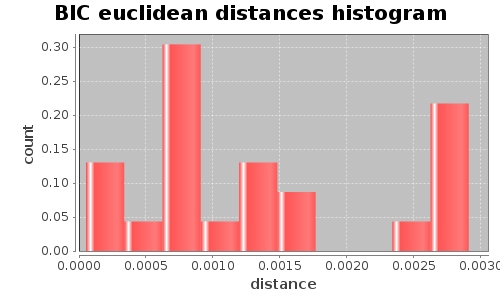
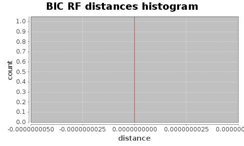

Application Meta
jModeltest 2.1
(c) 2011-onwards D. Darriba, G.L. Taboada, R. Doallo and D. Posada,(1) Department of Biochemistry, Genetics and Immunology
University of Vigo, 36310 Vigo, Spain.
(2) Department of Electronics and Systems
University of A Coruna, 15071 A Coruna, Spain.
e-mail: ddarriba@udc.es, dposada@uvigo.es
Thu May 21 17:20:58 MDT 2015
Linux 3.16.0-4-686-pae, arch: i386, bits: 32, numcores: 4
| Citation: | Darriba D, Taboada GL, Doallo R and Posada D. 2012. "jModelTest 2: more models, new heuristics and parallel computing". Nature Methods 9, 772. |
 Back to top
Back to top Settings
Arguments =Input Alignment: "/home/pquasi/Research/jmodeltest/jmodeltest-2.1.7/example-data/aP6.fas"
NumTaxa = 6
Length = 631
Phyml version = 3.0
Phyml binary = PhyML_3.0_linux32
Candidate models = 24
number of substitution schemes = 3
including models with equal/unequal base frequencies (+F)
including models with/without a proportion of invariable sites (+I)
including models with/without rate variation among sites (+G) (nCat = 4)
Optimized free parameters (K) = Substitution parameters + 9 branch lengths
Base tree for likelihood calculations = Fixed BioNJ
Tree topology search operation = NNI
Model Optimization Results
| ID | Name | Partition | -lnL | p | fA | fC | fG | fT | ti/tv | R(a) | R(b) | R(c) | R(d) | R(e) | R(f) | p-inv | shape |
|---|---|---|---|---|---|---|---|---|---|---|---|---|---|---|---|---|---|
| 1 | JC | 000000 | 1115.0488 | 9 | - | - | - | - | - | - | - | - | - | - | - | - | - |
| 2 | JC+I | 000000 | 1103.2765 | 10 | - | - | - | - | - | - | - | - | - | - | - | 0.9070 | - |
| 3 | JC+G | 000000 | 1106.5454 | 10 | - | - | - | - | - | - | - | - | - | - | - | - | 0.0230 |
| 4 | JC+I+G | 000000 | 1103.2763 | 11 | - | - | - | - | - | - | - | - | - | - | - | 0.9080 | 8192.0000 |
| 5 | F81 | 000000 | 1064.9636 | 12 | 0.4203 | 0.1546 | 0.2022 | 0.2229 | - | - | - | - | - | - | - | - | - |
| 6 | F81+I | 000000 | 1053.5654 | 13 | 0.4199 | 0.1549 | 0.2022 | 0.2230 | - | - | - | - | - | - | - | 0.9020 | - |
| 7 | F81+G | 000000 | 1056.5452 | 13 | 0.4203 | 0.1547 | 0.2022 | 0.2229 | - | - | - | - | - | - | - | - | 0.0230 |
| 8 | F81+I+G | 000000 | 1053.5651 | 14 | 0.4198 | 0.1550 | 0.2022 | 0.2230 | - | - | - | - | - | - | - | 0.6130 | 0.0180 |
| 9 | K80 | 010010 | 1114.5752 | 10 | - | - | - | - | 0.3459 | - | - | - | - | - | - | - | - |
| 10 | K80+I | 010010 | 1102.8509 | 11 | - | - | - | - | 0.3426 | - | - | - | - | - | - | 0.9070 | - |
| 11 | K80+G | 010010 | 1106.0862 | 11 | - | - | - | - | 0.3452 | - | - | - | - | - | - | - | 0.0230 |
| 12 | K80+I+G | 010010 | 1102.8504 | 12 | - | - | - | - | 0.3426 | - | - | - | - | - | - | 0.6310 | 0.0120 |
| 13 | HKY | 010010 | 1064.4386 | 13 | 0.4204 | 0.1544 | 0.2031 | 0.2222 | 0.3457 | - | - | - | - | - | - | - | - |
| 14 | HKY+I | 010010 | 1053.0886 | 14 | 0.4200 | 0.1547 | 0.2030 | 0.2224 | 0.3398 | - | - | - | - | - | - | 0.9020 | - |
| 15 | HKY+G | 010010 | 1056.0320 | 14 | 0.4204 | 0.1544 | 0.2030 | 0.2222 | 0.3434 | - | - | - | - | - | - | - | 0.0230 |
| 16 | HKY+I+G | 010010 | 1053.0886 | 15 | 0.4200 | 0.1547 | 0.2030 | 0.2224 | 0.3398 | - | - | - | - | - | - | 0.9020 | 8192.0000 |
| 17 | SYM | 012345 | 1114.4117 | 14 | - | - | - | - | - | 0.8649 | 0.5631 | 0.8708 | 1.0074 | 0.7607 | 1.0000 | - | - |
| 18 | SYM+I | 012345 | 1102.7942 | 15 | - | - | - | - | - | 0.9873 | 0.6009 | 0.9288 | 0.9677 | 0.7613 | 1.0000 | 0.9070 | - |
| 19 | SYM+G | 012345 | 1105.9643 | 15 | - | - | - | - | - | 0.8886 | 0.5695 | 0.8805 | 0.9938 | 0.7588 | 1.0000 | - | 0.0230 |
| 20 | SYM+I+G | 012345 | 1102.7931 | 16 | - | - | - | - | - | 0.9867 | 0.5999 | 0.9276 | 0.9681 | 0.7615 | 1.0000 | 0.6290 | 0.0130 |
| 21 | GTR | 012345 | 1063.1655 | 17 | 0.4234 | 0.1521 | 0.2022 | 0.2223 | - | 0.8226 | 0.4362 | 0.6321 | 1.2296 | 0.8933 | 1.0000 | - | - |
| 22 | GTR+I | 012345 | 1051.8398 | 18 | 0.4234 | 0.1520 | 0.2022 | 0.2224 | - | 0.8717 | 0.4151 | 0.6046 | 1.2520 | 0.9490 | 1.0000 | 0.8990 | - |
| 23 | GTR+G | 012345 | 1054.7202 | 18 | 0.4237 | 0.1519 | 0.2022 | 0.2223 | - | 0.8367 | 0.4252 | 0.6172 | 1.2478 | 0.9165 | 1.0000 | - | 0.0230 |
| 24 | GTR+I+G | 012345 | 1051.8390 | 19 | 0.4234 | 0.1520 | 0.2022 | 0.2224 | - | 0.8721 | 0.4150 | 0.6048 | 1.2520 | 0.9489 | 1.0000 | 0.6000 | 0.0130 |
There are 1 different topologies. The following table shows the models supporting each topology and the rank according to each Information Criterion, as well as Robinson-Foulds and Euclidean distances with the tree of the best-fit model.
| ID | Models | Topology | AIC | BIC | AICc | DT | |
|---|---|---|---|---|---|---|---|
| 0 |
JC JC+I JC+G JC+I+G F81 F81+I F81+G F81+I+G K80 K80+I K80+G K80+I+G HKY HKY+I HKY+G HKY+I+G SYM SYM+I SYM+G SYM+I+G GTR GTR+I GTR+G GTR+I+G
|
RANK | - | 0 | - | - | |
| Weight | - | 1.0000 | - | - | |||
| RF | - | 0 | - | - | |||
| AVG Distance | - | 1.3058e-03 | - | - | |||
| Distance VAR | - | 9.1414e-07 | - | - |
BIC Selection Results
Model selected
| Model | F81+I | ||
|---|---|---|---|
| partition | 000000 | ||
| -lnL | 1053.5654 | ||
| K | 13 | ||
| freqA | 0.4199 | R(a) | - |
| freqC | 0.1549 | R(b) | - |
| freqG | 0.2022 | R(c) | - |
| freqT | 0.2230 | R(d) | - |
| ti/tv | - | R(e) | - |
| R(f) | - | ||
| p-inv | 0.9020 | gamma | - |
Best model tree
(((P4:0.00806010,(P6:0.00680234,P1:0.00000001):0.00213664):0.00183364,P5:0.00975543):0.01157167,P3:0.01614596,P2:0.00506683);
Display best model tree in PhyloWidget
| Model | -lnL | K | BIC | delta | weight | cumWeight |
|---|---|---|---|---|---|---|
| F81+I | 1053.5654 | 13 | 2190.9458 | 0.0000 | 0.8613 | 0.8613 |
| HKY+I | 1053.0886 | 14 | 2196.4394 | 5.4936 | 0.0552 | 0.9166 |
| F81+G | 1056.5452 | 13 | 2196.9054 | 5.9596 | 0.0438 | 0.9603 |
| F81+I+G | 1053.5651 | 14 | 2197.3924 | 6.4466 | 0.0343 | 0.9946 |
| HKY+G | 1056.0320 | 14 | 2202.3263 | 11.3805 | 0.0029 | 0.9975 |
| HKY+I+G | 1053.0886 | 15 | 2202.8869 | 11.9411 | 0.0022 | 0.9997 |
| F81 | 1064.9636 | 12 | 2207.2949 | 16.3491 | 0.0002 | 1.0000 |
| HKY | 1064.4386 | 13 | 2212.6922 | 21.7464 | 0.0000 | 1.0000 |
| GTR+I | 1051.8398 | 18 | 2219.7312 | 28.7854 | 0.0000 | 1.0000 |
| GTR+G | 1054.7202 | 18 | 2225.4919 | 34.5462 | 0.0000 | 1.0000 |
| GTR+I+G | 1051.8390 | 19 | 2226.1768 | 35.2310 | 0.0000 | 1.0000 |
| GTR | 1063.1655 | 17 | 2235.9352 | 44.9894 | 0.0000 | 1.0000 |
| JC+I | 1103.2765 | 10 | 2271.0260 | 80.0802 | 0.0000 | 1.0000 |
| K80+I | 1102.8509 | 11 | 2276.6222 | 85.6764 | 0.0000 | 1.0000 |
| JC+I+G | 1103.2763 | 11 | 2277.4729 | 86.5271 | 0.0000 | 1.0000 |
| JC+G | 1106.5454 | 10 | 2277.5639 | 86.6181 | 0.0000 | 1.0000 |
| K80+I+G | 1102.8504 | 12 | 2283.0684 | 92.1226 | 0.0000 | 1.0000 |
| K80+G | 1106.0862 | 11 | 2283.0927 | 92.1469 | 0.0000 | 1.0000 |
| JC | 1115.0488 | 9 | 2288.1233 | 97.1775 | 0.0000 | 1.0000 |
| K80 | 1114.5752 | 10 | 2293.6235 | 102.6778 | 0.0000 | 1.0000 |
| SYM+I | 1102.7942 | 15 | 2302.2979 | 111.3522 | 0.0000 | 1.0000 |
| SYM+G | 1105.9643 | 15 | 2308.6382 | 117.6925 | 0.0000 | 1.0000 |
| SYM+I+G | 1102.7931 | 16 | 2308.7431 | 117.7974 | 0.0000 | 1.0000 |
| SYM | 1114.4117 | 14 | 2319.0856 | 128.1398 | 0.0000 | 1.0000 |
| -lnL: | negative log likelihod |
| K: | number of estimated parameters |
| BIC: | Bayesian Information Criterion |
| delta: | BIC difference |
| weight: | BIC weight |
| cumWeight: | cumulative BIC weight |
Confidence interval
There are 24 models in the 100.00% confidence interval:
F81+I HKY+I F81+G F81+I+G HKY+G HKY+I+G F81 HKY GTR+I GTR+G GTR+I+G GTR JC+I K80+I JC+I+G JC+G K80+I+G K80+G JC K80 SYM+I SYM+G SYM+I+G SYM

Euclidean distances histogram from each model optimized tree to F81+I tree.
Euclidean distances histogram from each model optimized tree to F81+I tree.

Robinson-Foulds distances histogram from the different topologies to F81+I topology.
Robinson-Foulds distances histogram from the different topologies to F81+I topology.